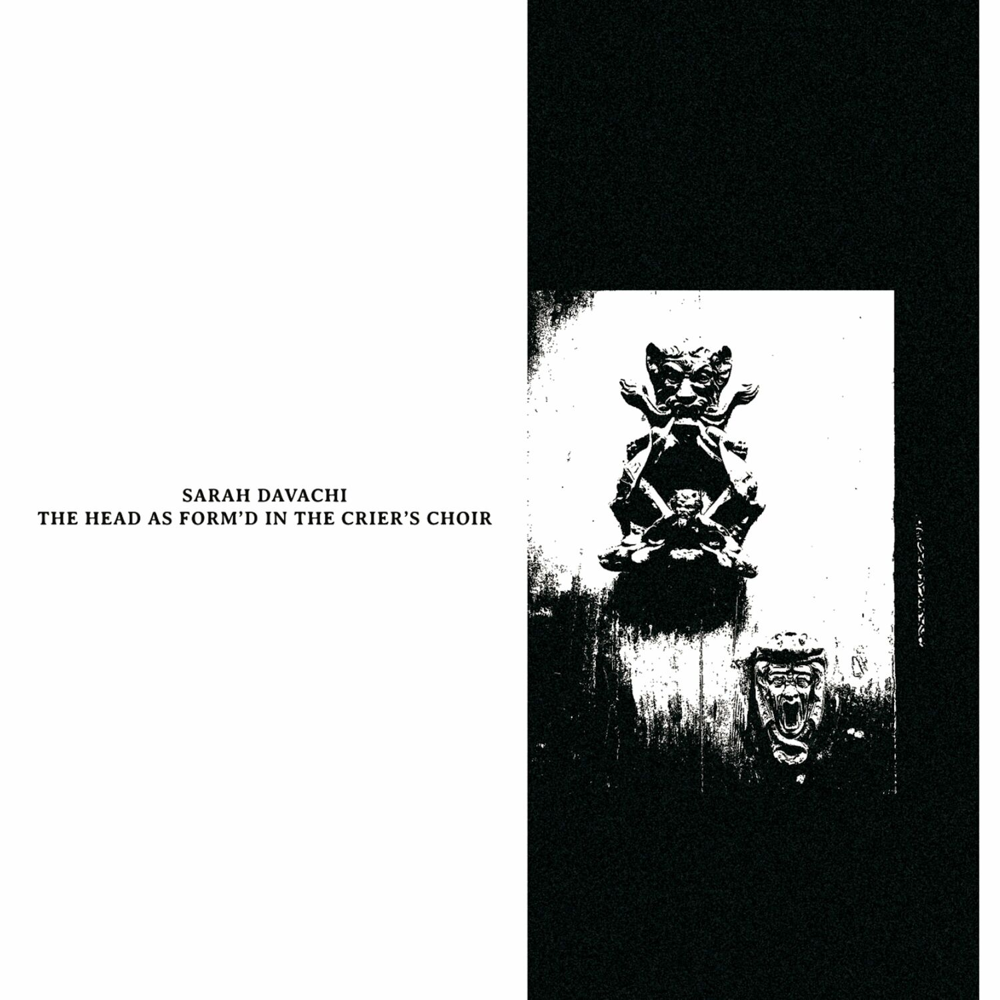

Sarah Davachi- The Head as Form D in the Crier S Choir



Género: Unknown
Sello: Late Music
Año: 2024-09-13
Total de pistas: 14
Información de Producción
| Campo | Información |
|---|---|
| Sello | Late Music |
| Año | 2024-09-13 |
| Género | Unknown |
| Total de pistas | 14 |
Tracklist
1. Prologo [11:29] | 📺 YouTube
1. Prologo [11:29]
2. Possente Spirto [11:31] | 📺 YouTube
2. Possente Spirto [11:31]
3. The Crier’s Choir [9:30] | 📺 YouTube
3. The Crier’s Choir [9:30]
4. Trio For A Ground [13:23] | 📺 YouTube
4. Trio For A Ground [13:23]
5. Res Sub Rosa [13:39] | 📺 YouTube
5. Res Sub Rosa [13:39]
6. Constants [9:19] | 📺 YouTube
6. Constants [9:19]
7. Night Horns [22:57] | 📺 YouTube
7. Night Horns [22:57]
Reviews y Menciones
📰 Menciones en Medios
| Medio | Título | Fecha |
|---|---|---|
| pitchfork.com | [Kali Malone: All Life Long Album Review | Pitchfork](https://pitchfork.com/reviews/albums/kali-malone-all-life-long/) |
📝 Reviews y Artículos
| Fuente | Título | Fecha | Origen |
|---|---|---|---|
| albumoftheyear.org | AOTY Summary - Sarah Davachi - The Head As Form’d In The Crier’s Choir (User: 74/Critic: 83) | 06/08/2025 | review_aoty |
| metacritic.com | Metacritic Summary - Sarah Davachi - The Head As Form’d In The Crier’s Choir (Score: 87) | 06/08/2025 | review_metacritic |
⭐ Puntuaciones y Críticas
| Plataforma | Puntuación Críticos | Puntuación Usuarios | Enlaces |
|---|---|---|---|
| Album of the Year | 83/100 (4 reviews) | 74/100 | 🔗 AOTY |
| Metacritic | 87/100 | - | 🔗 Metacritic |